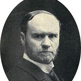

Come, Follow Me · Ezra & Nehemiah
Ezra 1; 3–7 · Nehemiah 2; 4–6; 8
Theme
Scripture
“…that the word of the Lord by the mouth of Jeremiah might be fulfilled, the Lord stirred up the spirit of Cyrus king of Persia…”
Ezra 1:1
Scripture
“That saith of Cyrus, He is my shepherd, and shall perform all my pleasure: even saying to Jerusalem, Thou shalt be built; and to the temple, Thy foundation shall be laid.”
Written about 150 years before Cyrus rose to power.
Isaiah 44:28
Primary source
c. 539 BC · British Museum · baked clay, inscribed in Akkadian
Document · Cyrus Cylinder · British Museum
Cyrus speaking in the first person — translated from the cuneiform
“I returned to (these) sacred cities… the sanctuaries of which have been ruins for a long time, the images which (used) to live therein and established for them permanent sanctuaries. I (also) gathered all their former inhabitants and returned (to them) their habitations… upon the command of Marduk, the great lord.”
Ezra 1:1
“the Lord stirred up the spirit of Cyrus…”
Cyrus Cylinder
“…upon the command of Marduk, the great lord.”
Same king. Same policy of return and rebuilding. Two very different explanations of who stirred him.
Discuss
What do you notice when you set Ezra and the Cyrus Cylinder side by side?
Document · Josephus
Antiquities of the Jews, Book 11, Chapter 1 (1st century AD)
“This was known to Cyrus by his reading the book which Isaiah left behind him of his prophecies… Accordingly, when Cyrus read this, and admired the Divine power, an earnest desire and ambition seized upon him to fulfill what was so written.”
Place yourself there
You are a Jew in Babylon. Your temple is ash. Then a Persian king — who does not worship your God — says he has been charged to rebuild the house of the Lord, and he will help pay for it.
Discuss
What does Cyrus’s story suggest about how the Lord moves His work in the world?
Ezra Taft Benson
April 1972
“God, the Father of us all, uses the men of the earth, especially good men, to accomplish his purposes. It has been true in the past, it is true today, it will be true in the future.”

Orson F. Whitney
April 1928
“God is using more than one people for the accomplishment of His great and marvelous work. The Latter-day Saints cannot do it all. It is too vast, too arduous for any one people.”
Joseph Fielding Smith
On the Reformers
“In preparation for this restoration the Lord raised up noble men, such as Luther, Calvin, Knox, and others whom we call reformers… The work of the reformers was of great importance, but it was a preparatory work.”
Discuss
Where have you seen the Lord stir someone — maybe outside the Church — to move His work forward?
Theme
Scripture
“Sanballat and Geshem sent unto me, saying, Come, let us meet together in some one of the villages in the plain of Ono. But they thought to do me mischief.”
Nehemiah 6:2
Document · open letter
Nehemiah 6:6–7 — Sanballat’s accusation, sent for everyone to read
“It is reported among the heathen, and Gashmu saith it, that thou and the Jews think to rebel: for which cause thou buildest the wall, that thou mayest be their king… and thou hast also appointed prophets to preach of thee at Jerusalem, saying, There is a king in Judah: and now shall it be reported to the king according to these words. Come now therefore, and let us take counsel together.”
Scripture
“And I sent messengers unto them, saying, I am doing a great work, so that I cannot come down: why should the work cease, whilst I leave it, and come down to you?”
Nehemiah 6:3
Four times
Not once. Four times. The invitation sounded reasonable — even peacemaking. Nehemiah knew it was a trap.
Place yourself there
Your work is unfinished. Critics are loud. Then comes an invitation that sounds mature: leave the wall for a moment. Sit down. Talk it out. Be reasonable.
Discuss
How do you tell the difference between a wise pause… and a distraction dressed up as wisdom?
Dieter F. Uchtdorf
April 2009
“Nehemiah refused to allow distractions to prevent him from doing what the Lord wanted him to do.”
Dieter F. Uchtdorf
April 2009
“Our Heavenly Father seeks those who refuse to allow the trivial to hinder them in their pursuit of the eternal.”
Discuss
What keeps pulling you down off your wall — and what would staying up cost you?
Theme
Document · Nehemiah’s memoir
Nehemiah 6:9 — first-person prayer, written into the record
“For they all made us afraid, saying, Their hands shall be weakened from the work, that it be not done. Now therefore, O God, strengthen my hands.”
Scripture
“So built we the wall; and all the wall was joined together unto the half thereof: for the people had a mind to work.”
Nehemiah 4:6
Scripture
“…And the king granted me, according to the good hand of my God upon me.”
Nehemiah 2:8
Document · Ezra’s own words
Ezra 7:27–28
“Blessed be the Lord God of our fathers, which hath put such a thing as this in the king’s heart… And I was strengthened as the hand of the Lord my God was upon me, and I gathered together out of Israel chief men to go up with me.”
Place yourself there
The critics’ goal is specific: weaken your hands. You can feel the fear they want you to feel. What do you ask God for in that exact moment?
Harold B. Lee
As taught by Thomas S. Monson
“Whom the Lord calls, the Lord qualifies.”
Thomas S. Monson
October 2008
“If we are on the Lord’s errand, we are entitled to the Lord’s help.”
Scripture
“I will go before your face. I will be on your right hand and on your left, and my Spirit shall be in your hearts, and mine angels round about you, to bear you up.”
Doctrine and Covenants 84:88
Discuss
When has the Lord strengthened your hands for a work that felt bigger than you?
Nehemiah 6:3